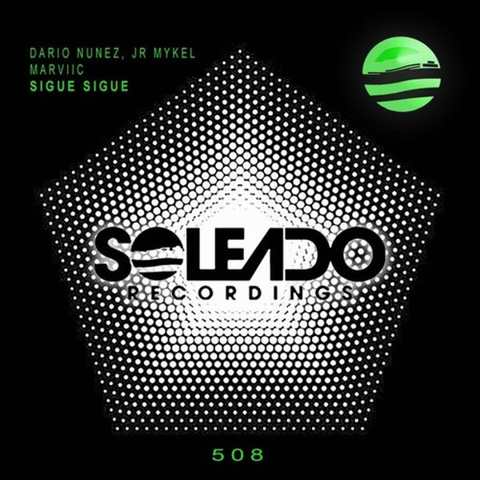

I 24 dischi
 1
Clap your hands - Robin Schulz RemixKungs
1
Clap your hands - Robin Schulz RemixKungs
 2
TechnologicFake Jake & I.GOT.U
2
TechnologicFake Jake & I.GOT.U
 3
30ANDRY J
3
30ANDRY J
 4
JudgementalDEL-30
4
JudgementalDEL-30
 5
CrankFelguk, JØRD
5
CrankFelguk, JØRD
 6
Stay with meAvira
6
Stay with meAvira
 7
Makes me feel goodR Plus
7
Makes me feel goodR Plus
 8
Love runs deepAutograf
8
Love runs deepAutograf
 9
The Beat GoesCroatia Squad
9
The Beat GoesCroatia Squad
 10
Gotta Let U GoDon Diablo x Dominica
10
Gotta Let U GoDon Diablo x Dominica
 11
PhoenixKasablanca
11
PhoenixKasablanca
 12
Rave dreamsVictor Tellagio
12
Rave dreamsVictor Tellagio
 13
SunshineP0P Cultur
13
SunshineP0P Cultur
 14
UniverseKrister x Melyjones
14
UniverseKrister x Melyjones
 15
On The LowWax Motif, longstoryshort
15
On The LowWax Motif, longstoryshort
 16
CommotionVintage Culture x Maxi Jazz
16
CommotionVintage Culture x Maxi Jazz
 17
ClickTujamo
17
ClickTujamo
 18
What Is RealTita Lau
18
What Is RealTita Lau
 19
House Of LoveDj LeeMac
20
Bagno A Mezzanotte - Socievole & Adalwolf RemixElodie
19
House Of LoveDj LeeMac
20
Bagno A Mezzanotte - Socievole & Adalwolf RemixElodie
 21
ReprogrammedDJ Mes
21
ReprogrammedDJ Mes

22 Sigue SigueDario Nuñez, Jr Mykel & marviic 23
Nena (Extended Mix)Viky (IT)
23
Nena (Extended Mix)Viky (IT)
 24
Close Friends Only (Original Mix)KC Gilmore
24
Close Friends Only (Original Mix)KC Gilmore
La tracklist
- 1 Clap your hands - Robin Schulz Remix Kungs Universal Music Division Polydor France
- 2 Technologic Fake Jake & I.GOT.U CHAPTER EIGHT
- 3 30 ANDRY J Bang Record
- 4 Judgemental DEL-30 Toolroom Records
- 5 Crank Felguk, JØRD Virgin Music Label And Artist Services (S&D)
- 6 Stay with me Avira A State Of Trance Radio
- 7 Makes me feel good R Plus Armada Music
- 8 Love runs deep Autograf Armada Music
- 9 The Beat Goes Croatia Squad Enormous Tunes
- 10 Gotta Let U Go Don Diablo x Dominica WEPLAY Music
- 11 Phoenix Kasablanca Anjunabeats
- 12 Rave dreams Victor Tellagio Hexagon
- 13 Sunshine P0P Cultur Hexagon
- 14 Universe Krister x Melyjones Hexagon
- 15 On The Low Wax Motif, longstoryshort Divided Souls
- 16 Commotion Vintage Culture x Maxi Jazz Spinnin' Records
- 17 Click Tujamo Musical Freedom
- 18 What Is Real Tita Lau Spinnin' Records
- 19 House Of Love Dj LeeMac Vamos Music
- 20 Bagno A Mezzanotte - Socievole & Adalwolf Remix Elodie Bootleg
- 21 Reprogrammed DJ Mes Guesthouse Music
- 22 Sigue Sigue Dario Nuñez, Jr Mykel & marviic SOLEADO RECORDINGS
- 23 Nena (Extended Mix) Viky (IT) Safe Music
- 24 Close Friends Only (Original Mix) KC Gilmore Anything Can Happen